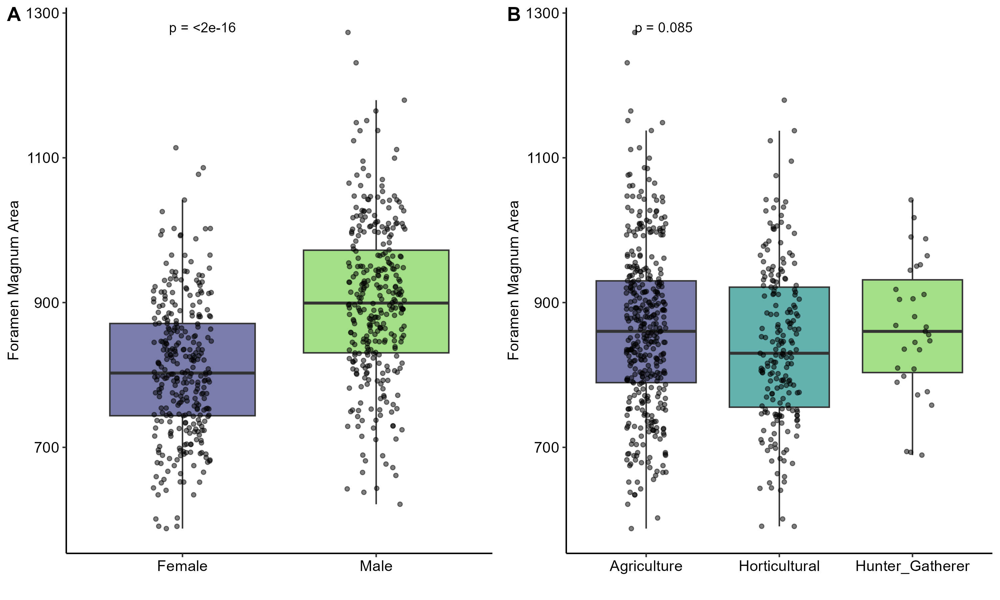
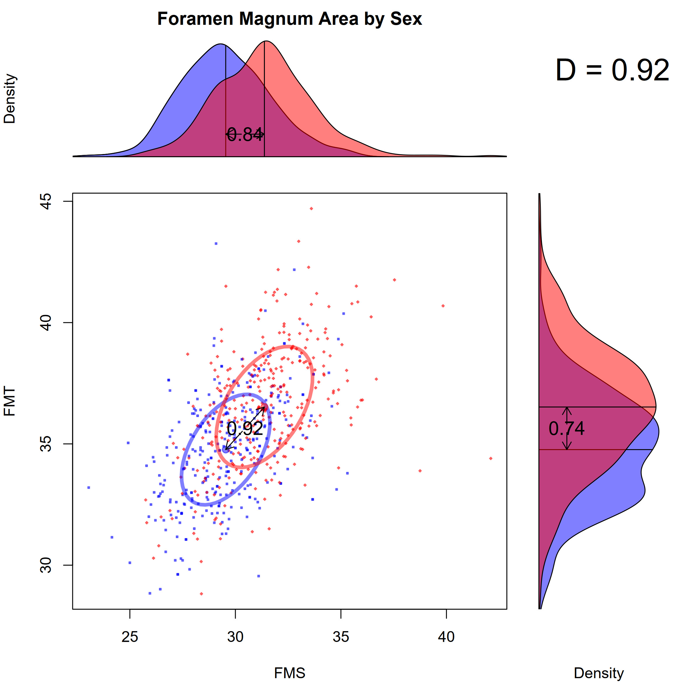
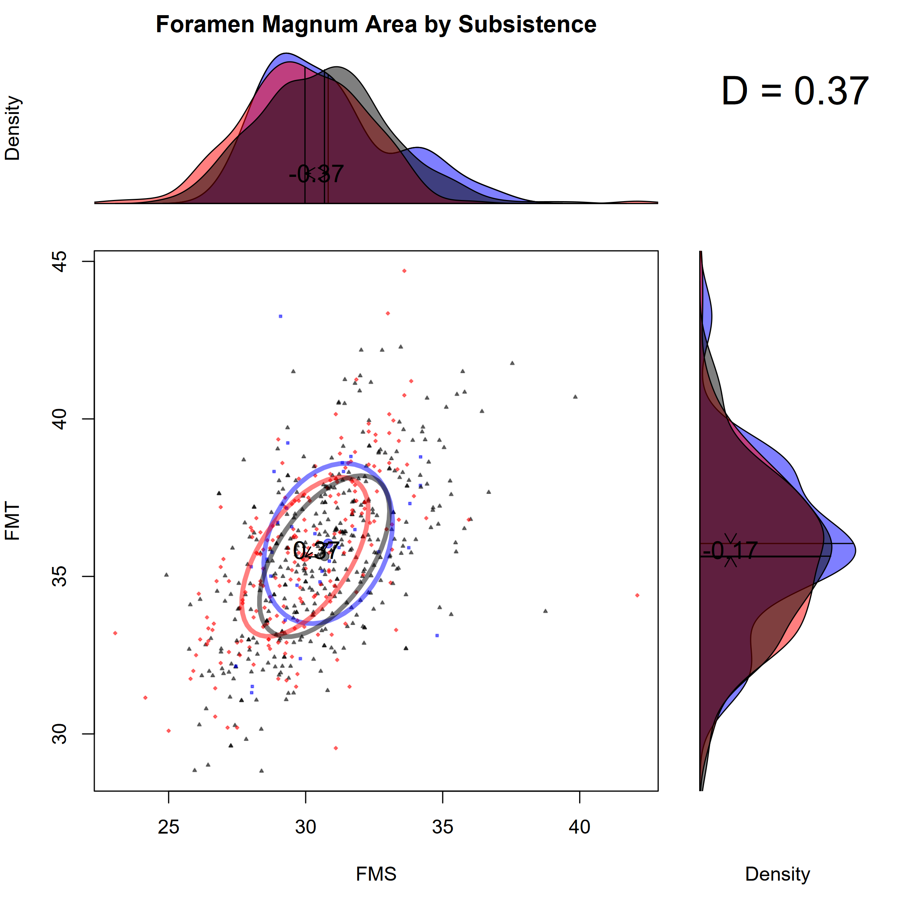
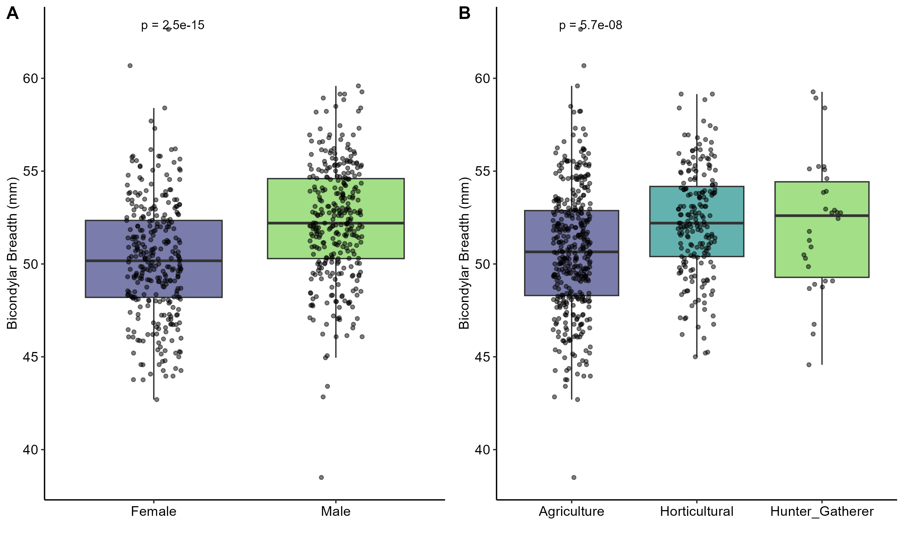
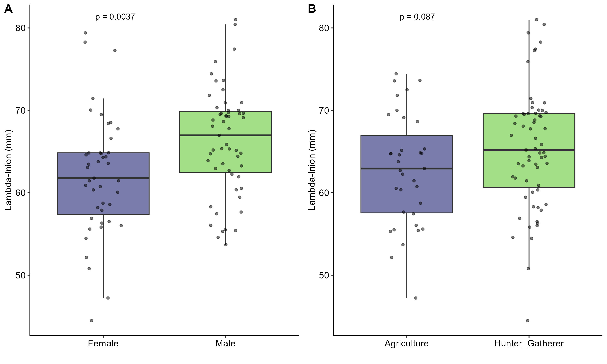
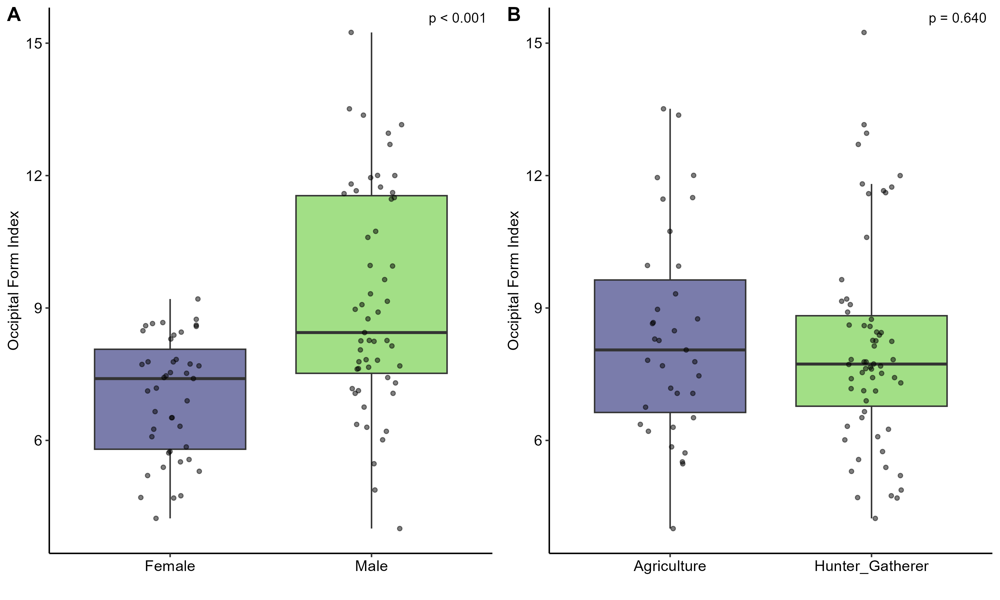
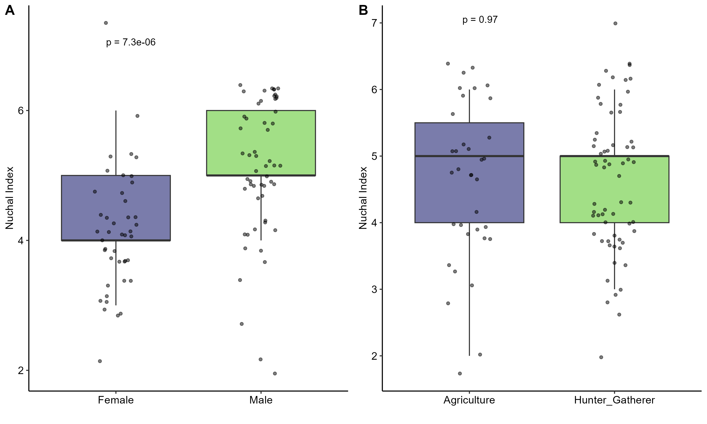

Sexual Dimorphism and Biomechanical Loading in Occipital Bone Morphological Variation
Executive Summary
Problem: Occipital bone research has been biased toward evolutionary and forensic questions, often with unexplained variance. Whether behavioral differences – specifically gender-based divisions of daily activity and variation in subsistence workload – account for some of that unexplained variation is poorly understood. Distinguishing developmentally fixed traits from those subject to adult remodeling is essential for interpreting occipital morphology in both bioarchaeological and forensic contexts.
Approach: I examined metric and nonmetric traits of the occipital bone across nine skeletal collections (n=663) representing hunter-gatherers, horticulturalists, and agriculturalists spanning Florida Archaic through 20th-century modern study collections. Two datasets were analyzed – an original Florida collection (n=98) and a mined dataset of published Plains Arikara and study collection data (n=565) – combined where variables overlapped. Two-way Type II ANOVA tested sex and subsistence as predictors for five outcome variables; discriminant function analysis evaluated foramen magnum area as a sex estimation tool.
Insights: All five outcome variables showed significant sex-based differences. Bicondylar breadth and lambda-inion distance also varied by subsistence practice, suggesting a biomechanical signal in traits subject to adult remodeling. Foramen magnum area, fixed developmentally by age 7, showed sexual dimorphism but no subsistence signal – consistent with its canalized developmental trajectory. Discriminant function analysis using foramen magnum area achieved only 71% sex estimation accuracy, insufficient for forensic use; adding bicondylar breadth as a second predictor reduced rather than improved accuracy, indicating that biomechanical loading introduces noise into condylar metrics when used for sex estimation.
Significance: These findings demonstrate that occipital bone traits show consistent sexual dimorphism but limited standalone forensic utility. Subsistence-based biomechanical activity contributes to variation in condylar and nuchal metrics, complicating their use as pure sex indicators. Developmentally fixed and remodeling-prone traits behave differently and should be interpreted accordingly. Larger datasets with known individual occupation data are needed to fully parse sex-based from activity-based variation in the occipital bone.
Key Findings
- All five outcome variables showed significant sexual dimorphism
- Bicondylar breadth and lambda-inion distance varied significantly by subsistence practice; foramen magnum area, occipital form index, and nuchal index did not
- Horticulturalists and hunter-gatherers both exceeded agriculturalists on bicondylar breadth; the horticulturalist vs. hunter-gatherer difference was negligible (Tukey HSD p=0.95)
- Foramen magnum area achieved 71% sex estimation accuracy – above chance but below forensic standards
- Adding bicondylar breadth as a second DFA predictor reduced accuracy to 66%, reflecting biomechanical loading as noise in condylar sex estimation
Hoover, K.C., & Thomas, G.P. (2022). Sexual dimorphism and biomechanical loading in occipital bone morphological variation. American Journal of Human Biology, e23792. DOI: 10.1002/ajhb.23792
Research Questions
- Does foramen magnum area vary by biological sex and/or subsistence practice?
- Does bicondylar breadth vary by sex and/or subsistence?
- Do ectocranial traits (lambda-inion distance, occipital form index, nuchal index) vary by sex and/or subsistence?
- How accurately can foramen magnum area predict biological sex, alone and combined with bicondylar breadth?
Research Answers
Developmental Timing Determines Biomechanical Sensitivity
Traits fixed early in development and under stronger genetic control (foramen magnum length and breadth) behave differently from traits influenced by muscle use and adult remodeling (bicondylar breadth, lambda-inion distance, external occipital protuberance depth, nuchal crest presence, nuchal line count, general EOP form). This distinction structured both the predictions and the results. Full two-way ANOVA results for all five outcome variables are in the table below; individual results are discussed in the subsections that follow.
| Variable | Dataset | Predictor | F | p | Sig. |
|---|---|---|---|---|---|
| Foramen Magnum Area | Original | Subsistence | 0.00 | .952 | |
| Sex | 9.27 | .003 | ** | ||
| Foramen Magnum Area | Combined* | Subsistence | 2.41 | .090 | . |
| Sex | 129.26 | <.002 | *** | ||
| Bicondylar Breadth | Original | Subsistence | 9.93 | .003 | ** |
| Sex | 14.12 | <.002 | *** | ||
| Bicondylar Breadth | Combined | Subsistence | 19.6 | <.002 | *** |
| Sex | 70.9 | <.002 | *** | ||
| Lambda-Inion | Original | Subsistence | 5.95 | .017 | * |
| Sex | 11.93 | .001 | *** | ||
| Occipital Form Index | Original* | Subsistence | 0.18 | .670 | |
| Sex | 29.66 | <.002 | *** | ||
| Nuchal Index | Original | Subsistence | 0.73 | .390 | |
| Sex | 23.18 | <.002 | *** |
Type II SS two-way ANOVA results. * white.adjust = TRUE used for heteroscedastic models. Significance: . p < .10 | * p < .05 | ** p < .01 | *** p < .001
Foramen Magnum Area: Sex Only
The basicranium is fully developed by age 7 and the foramen magnum does not remodel in adulthood, so any sex-based variation in this region reflects early developmental trajectory rather than biomechanical activity. Foramen magnum area was significantly different between the sexes in both datasets (Original: F=9.27, p=.003; Combined: F=129.26, p<.002), with males averaging approximately 10 cm2 larger in the combined dataset. No subsistence effect emerged in either dataset (Original: F=0.00, p=.952; Combined: F=2.41, p=.09), consistent with developmental canalization. Panel A shows the sex difference clearly; panel B shows the absence of subsistence-based separation.
Figure 1A–B. Foramen magnum area by sex (A) and subsistence (B). Significant sex dimorphism; no subsistence effect.

Interpretation: Foramen magnum area is sexually dimorphic but subsistence-blind – exactly what developmental canalization predicts. Its utility in sex estimation is real but limited; the overlap between distributions means it cannot classify sex reliably on its own.
The bivariate relationship between foramen magnum sagittal (FMS) and transverse (FMT) dimensions – the raw measurements combined into the area index – shows the same pattern. Despite statistically significant dimorphism, the D statistic of 0.92 by sex reflects substantial distributional overlap. By subsistence the overlap is even greater (D=0.37), with the three groups nearly indistinguishable.
Figure 2. Foramen magnum dimensions (FMS × FMT) by sex. D=0.92; substantial overlap despite significant dimorphism.

Interpretation: The marginal density plots make the overlap visible in a way that mean differences alone do not. Even the largest standardized difference in this dataset (D=0.92 by sex) leaves the distributions substantially overlapping – the core problem for forensic sex estimation from this trait.
Figure 3. Foramen magnum dimensions (FMS × FMT) by subsistence. D=0.37; groups are largely indistinguishable.

Interpretation: Three subsistence groups with very different activity profiles produce nearly identical foramen magnum dimension distributions. This is the clearest evidence that this trait is not responding to biomechanical loading.
Bicondylar Breadth: Sex and Subsistence Signal
Unlike the foramen magnum, the occipital condyles articulate with the first cervical vertebra and may remodel under biomechanical pressure from head rotation, flexion, and extension across the lifespan. Bicondylar breadth was significantly different by both sex and subsistence in both datasets (see ANOVA table above). Sex effects were robust (Original: F=14.12, p<.002; Combined: F=70.9, p<.002). Subsistence effects were also significant (Original: F=9.93, p=.003; Combined: F=19.6, p<.002). Post-hoc Tukey HSD on the combined dataset confirmed horticulturalists and hunter-gatherers both exceeded agriculturalists in condylar breadth; the horticulturalist vs. hunter-gatherer difference was negligible (p=.95), suggesting a threshold effect rather than a linear gradient across subsistence intensity.
Figure 4A–B. Bicondylar breadth by sex (A) and subsistence (B). Significant effects for both predictors.

Interpretation: The subsistence signal in bicondylar breadth – absent in foramen magnum area – is consistent with biomechanical remodeling of the condylar region. Populations with more physically demanding and gender-differentiated subsistence strategies show broader condylar breadths, suggesting activity-based variation alongside sexual dimorphism.
Lambda-Inion Distance: Sex and Subsistence Signal
Lambda-inion distance measures the length of the nuchal plane from the meeting of the sagittal and lambdoid sutures to the external occipital protuberance. This region serves as the attachment site for the nuchal ligament, which supports the weight of the head and may develop in response to sustained physical activity. Males averaged approximately 4.8 mm longer than females (F=11.93, p=.001). Controlling for sex, subsistence was also significant (F=5.95, p=.017), with hunter-gatherers averaging approximately 3.5 mm longer than agriculturalists. Lambda-inion distance may partly reflect EOP morphology – more robust protuberances alter the nuchal plane – but the subsistence signal is consistent with the biomechanical interpretation.
Figure 5A–B. Lambda-inion distance by sex (A) and subsistence (B). Plot p-values are unadjusted one-way comparisons; see ANOVA table above for two-way model result.

Interpretation: Lambda-inion distance is the only ectocranial metric that shows both a sex effect and a subsistence effect, making it the strongest candidate for activity-based variation in the posterior occipital region. The hunter-gatherer advantage is consistent with more physically intensive and biomechanically demanding activity patterns.
Occipital Form Index and Nuchal Index: Sex Only
The ectocranial posterior of the occipital bone – the region of heavy buttressing and muscle attachment for neck and head movement – showed sexual dimorphism across both composite indexes but no subsistence-based variation. The Occipital Form Index (EOP depth + general form) was significantly higher in males (F=29.66, p<.002), reflecting deeper protuberances. The Nuchal Index (nuchal line count + nuchal crest presence) was also significantly higher in males (F=23.18, p<.002), reflecting greater muscle marking. Neither index differed significantly by subsistence (Form Index: p=.670; Nuchal Index: p=.390).
Figure 6A–B. Occipital form index by sex (A) and subsistence (B). Sex effect only.

Interpretation: The absence of a subsistence signal in the occipital form index is somewhat unexpected given the attachment of neck muscles used in physically demanding activities. The result may reflect the composite nature of the index – combining a continuous metric (EOP depth) with a nominal trait (general form) may obscure subsistence-related variation in either component.
Figure 7A–B. Nuchal index by sex (A) and subsistence (B). Sex effect only.

Interpretation: Nuchal muscle marking is clearly sexually dimorphic but insensitive to subsistence practice in these datasets. The result is consistent with the form index finding and may reflect the broad occupational heterogeneity within the agricultural group – modern study collections and 19th-century military remains represent diverse activity profiles that may wash out any subsistence signal.
Discriminant Function Analysis
Given the significant sexual dimorphism in foramen magnum area, we tested its utility for sex estimation using discriminant function analysis on the combined dataset (n=663). Data were scaled and split 70/30 into training and test sets. Foramen magnum area alone predicted biological sex at 71% accuracy (LDA coefficient=1.108) – above chance but well below the threshold for forensic utility. Adding bicondylar breadth as a second predictor reduced accuracy to 66%, with coefficients of 0.89 and 0.41 respectively. The decline in accuracy when adding bicondylar breadth is consistent with biomechanical loading introducing noise into condylar-based sex estimation – the subsistence signal in bicondylar breadth that makes it biologically interesting is precisely what undermines its forensic utility.
Study Design
Data Source: Two skeletal datasets collected and mined by the authors. Original dataset (n=98): Florida skeletal collections including Windover (8BR246), Hutchinson Island (8MT37), FSU Teaching Collection, and St. Mark’s Military (8WA108). Mined dataset (n=565): published thesis data on Plains Arikara (Larson 39WW2, Leavenworth 39CO9, Mobridge 39WW1) and large modern study collections (Hamann-Todd, Terry Collection).
Data Handling: Three measurement trials for five metric traits using an electronic sliding caliper; two observation trials for three nonmetric traits. Intra-observer agreement confirmed via kappa (irr). Measurement error assessed via Levene’s test across trials (all <0.51% of trait variance). Foramen magnum length and breadth combined as an ellipse area index (pi x L x B). PCA on five ectocranial variables identified three vector clusters supporting two composite indexes: Occipital Form Index (EOP depth + general form) and Nuchal Index (nuchal crest + nuchal line count). Datasets combined where variables overlapped (foramen magnum area and bicondylar breadth) to create combined dataset (n=663).
| Site / Collection | Dataset | Subsistence | Date Range | n | F | M |
|---|---|---|---|---|---|---|
| Windover (8BR246) | Original | Hunter-Gatherer | 8522–7421 BP | 47 | 24 | 23 |
| Hutchinson Island (8MT37) | Original | Hunter-Gatherer | 2000–1000 BP | 16 | 8 | 8 |
| FSU Teaching Collection | Original | Agriculture | 20th century | 22 | 11 | 11 |
| St. Mark’s Military (8WA108) | Original | Agriculture | 19th century | 13 | 0 | 13 |
| Larson (39WW2) | Mined | Horticultural | 1679–1733 | 115 | 57 | 58 |
| Leavenworth (39CO9) | Mined | Horticultural | 1802–1832 | 30 | 14 | 16 |
| Mobridge (39WW1) | Mined | Horticultural | 1600–1700 | 56 | 31 | 25 |
| Hamann-Todd Collection | Mined | Agriculture | 1912–1938 | 107 | 54 | 53 |
| Terry Collection | Mined | Agriculture | 1899–1941 | 257 | 129 | 128 |
Table 1. Sample composition by site, dataset, subsistence category, and sex.
Analytical Approach:
- Intraobserver error – kappa2 and Spearman correlation for nonmetric traits; Levene’s test across measurement trials for metric traits
- PCA on five ectocranial variables to identify variable clusters and support index construction
- Assumption testing – normality (QQ plots), homogeneity of variance (Levene’s test), outliers (Rosner test) for original and combined datasets
- Two-way ANOVA (Type II SS, car::Anova) with sex and subsistence as predictors, preceded by interaction testing (Type III); no interactions detected; heteroscedasticity-corrected models (white.adjust=TRUE) used for Index_Form (original) and Index_FM (combined)
- Post-hoc Tukey HSD for combined dataset subsistence comparisons on bicondylar breadth and foramen magnum area
- Discriminant function analysis (MASS::lda) for sex estimation using foramen magnum area alone and with bicondylar breadth as a second predictor; 70/30 train/test split
Project Resources
Repository: github.com/kchoover14/subsistence-impacts-occipital-biomechanics
Data: Original skeletal data collected by the authors from Florida collections; mined data from published theses on Plains Arikara and modern study collections. All data files included in repository.
data-occ-original-raw-22dec21.csv– raw original Florida dataset (3 measurement trials)data-occ-westcott-raw.csv,data-occ-williams-raw.csv– raw mined thesis datasetsdata-occ-mined.csv– cleaned mined datasetrevised-preparation-original.csv,revised-preparation-mined.csv,revised-preparation-combined.csv– analysis-ready datasets
Code:
revised-preparation-original.R– wrangling, reliability testing, measurement error, PCA, index creation for original Florida datasetrevised-preparation-mined.R– standardization and merging of mined Arikara and study collection datarevised-exploratory.R– assumption testing (normality, Levene’s, outliers) for original and combined datasetsrevised-analysis.R– two-way ANOVA, Tukey HSD, discriminant function analysis, and all figures
Project Artifacts:
- ANOVA figures (n=5):
revised-plot-fm.png,revised-plot-bcb.png,revised-plot-li.png,revised-plot-form.png,revised-plot-nuchal.png - FM dimension scatter figures (n=2):
revised-scatter-fm-sex.png,revised-scatter-fm-subsistence.png - PCA biplot (n=1):
revised-pca-biplot.png
Environment:
renv.lockandrenv/– restore withrenv::restore()
License:
- Code and scripts © Kara C. Hoover, licensed under the MIT License.
- Data, figures, and written content © Kara C. Hoover, licensed under CC BY-NC-ND 4.0.
Tools & Technologies
Languages: R
Tools: None
Packages: dplyr | tidyr | irr | car | psych | EnvStats | MASS | factoextra | ggplot2 | cowplot
Expertise
Domain Expertise: bioarchaeology | skeletal biology | sexual dimorphism | biomechanics | intraobserver reliability | measurement error | PCA | discriminant function analysis | mixed datasets
Transferable Expertise: Combining original data collection with published data mining to expand analytical scope while maintaining methodological rigor; applying multiple statistical frameworks to distinguish genetic from behavioral sources of skeletal variation; evaluating the forensic utility and limitations of morphological metrics.